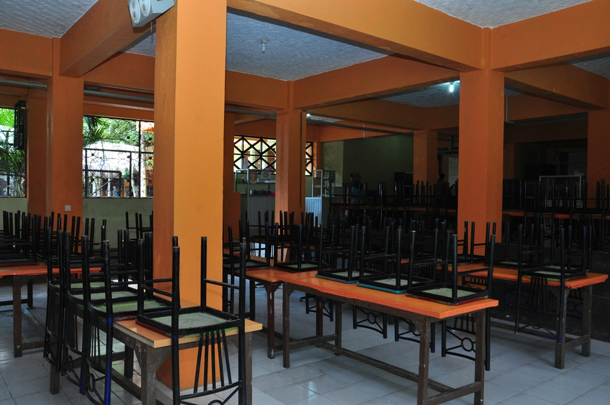

KANTIN SMK WIKRAMA BOGOR
Kantin Wikrama berdiri tahun 2004. Namun, di tahun 2017 kantin mulai berbenah diri menjadi kantin sehat. Predikat kantin sehat tersebut dinobatkan langsung oleh Dinas Kesehatan Kota Bogor setelah melakukan penilaian terhadap kantin Wikrama di tahun 2017. Hal tersebut karena, SMK Wikrama melihat sebagian besar aktivitas peserta didik berada di lingkungan sekolah, sehingga sudah menjadi tanggung jawab warga sekolah untuk memperhatikan kesehatan peserta didiknya, mulai dari makanan. Berbagai aspek penunjang kesehatan peserta didik sangat diperhatikan, mulai dari cara pengolahan makan, sarana yang digunakan, penjamah (pelayan) makanan, kebersihan tempat, serta perilaku konsumen. Menu makanan yang dijajakan di kantin sehat SMK Wikrama sangat beragam. Beberapa makanan yang diproduksi koki Wikrama antara lain, makanan berat (nasi dan berbagai lauknya), soto, mie ayam, dan sebagainya.
Selain itu, kantin sehat Wikrama juga menjadi sumber penghasilan bagi warga sekitar, karena ada beberapa makanan yang dipasok dari luar. Akan tetapi makanan tersebut tetap harus memerhatikan beberapa ketentuan yang telah ditetapkan. Pertama tidak boleh menggunakan plastik atau kertas (sesuai budaya Wikrama), dilarang menggunakan zat berbahaya dalam makanan (vetsin, pewarna tekstil, formalin dan sebagainya). Kemudian tidak diperkenankan juga menjual makanan yang menggunakan bumbu perasa (rasa jagung, keju, dan sebagainya).
Triwahyuni selaku koordinator atau manager kantin mengungkapkan, zat yang tidak boleh digunakan dalam makanan yang dijual di kantin SMK Wikrama diantaranya, pewarna, penggurih (vetsin/micin), bahan pengawet, formalin, dan bahan berbahaya lainnya. Zat berbahaya apabila terus dikonsumsi maka akan berdampak negatif. Apabila ditinjau dari jangka pendek, maka sering kita temuai penyakit diare atau keracunan makanan.

KANTIN SMK WIKRAMA BOGOR
Dampak jangka panjang salah satunya penyakit kanker, dan penyakit berbahaya lainnya.Ia menjelaskan, agar makanan yang dijual tetap terasa enak, maka penggunaan zat-zat berbahaya tersebut diganti dengan bahan alami. Contohnya, penggunaan vetsin pada makanan, bisa disiasati dengan takaran gula pasir dan garam yang diseimbangkan., selain itu penggunaan bumbu kemiri juga dapat menghasilkan rasa gurih, ditambah dengan, gula merah, tomat, dan gula batu. “Selanjutnya, untuk pewarna, bisa digantikan dengan kunyit untuk warna kuning, merah buah bit, dan hijau dari daun suji,” tambah Triwahyuni.
Berkat kesungguhan pengurusnya dan seluruh warga sekolah yang mendukung, kantin sehat Wikrama termasuk dalam sekolah pilihan yang direkomendasikan untuk diteliti langsung oleh Badan Pengawas Obat dan Makanan (BPOM). Hal tersebut terjadi berdasarkan laporan Dinas Kesehatan (Dinkes) Kota Bogor tentang kantin sehat di SMK Wikrama Bogor. Akhirnya pada 15 Oktober 2018, kantin sehat Wikrama mendapatkan kunjungan dari anggota Puskesmas Pulo Armin, Dinkes Kota Bogor dan BPOM.Kunjungan itu dilakukan dalam rangka penilaian terhadap keamanan pangan di SMK Wikrama. Penilaian yang dilakukan mulai dari cara menyimpan, mengolah, dan menyaji makanan yang baik. Selanjutnya dari keamanan panggan, serta perilaku konsumen (apakah sekolah telah memberikan pemahaman terhadap peserta didiknya dan penjaga sekolahnya).
Hasil dari penilaian tersebut, kantin sehat SMK Wikrama meraih nilai 95 dari skala 100. Nilai yang cukup memuaskan. Feri Firmansyah selaku pembina kantin sehat mengemukakan “Evaluasi penilaian tersebut yaitu bahwa kantin sehat perlu meerhatikan cara penanganan hama serta cara menyimpan makanan mentah dan matang perlu diperhatikan lagi.”Feri Juga membeberkan bahwa untuk kedepannya kantin sehat SMK Wikrama harus lebih baik. “Kantin Wikrama harus terus berkembang, tetap konsisten, dan memberikan yang terbaik untuk konsumen SMK Wikrama,” Beber Feri. (SH/MF/GU/IU).